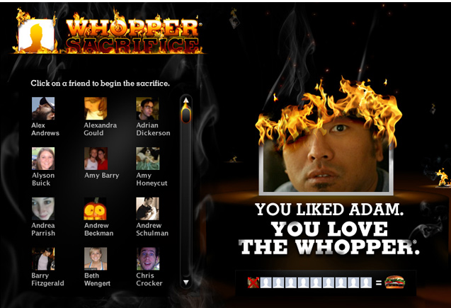

Media strategy, as used in the advertising industry, is concerned with how messages will be delivered to consumers. It involves: identifying the characteristics of the target audience, who should receive messages and defining the characteristics of the media that will be used for the delivery of the messages, with the intent being to influence the behaviour of the target audience pertinent to the initial brief. (from Wikipedia, emphasis mine)
More simply - how can we best deliver our message to our target audience?
What types of media are we talking about?
When we are thinking of our target audience and their context, we seek to answer questions such as:
Answering the questions above will affect the content and the design of the content. We can alter how loud the design needs to be. We can alter the density of detail of the information. We can control the timing of our communications.
This campaign combined environmental design and social media.
A contest that used Facebook's tagging feature to spread the message.

People were asked to 'unfriend' 10 Facebook friends. In return, they would receive a Whopper ($2 coupon). Victims were notified that they were sacrificed for a burger. The campaign was a huge success and generated plenty of buzz for Burger King. It was, however, eventually taken down by Facebook for privacy reasons: you are not supposed to see who removes you as a friend. By the end of the campaign, over 200,000 people were sacrificed. Incidentally, one friend was worth about 20 cents.